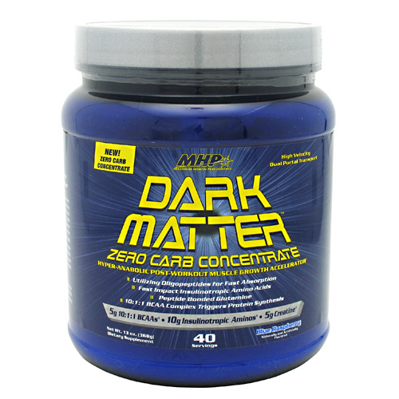

Información Dark Matter :
Hay varios aspectos de la nutrición
post-entrenamiento que deben ser abordados después de una sesión de entrenamiento de alta
intensidad para la recuperación muscular y sistémico completo. Con cada sesión de entrenamiento,
se está rompiendo las fibras musculares dentro de las células del músculo, dejando su cuerpo en
un mayor estado catabólico. Si usted no proporciona a su cuerpo con los nutrientes adecuados y
aminoácidos esenciales que necesita para recuperarse, este se comenzará a alimentar a sí mismo,
lo que afecta negativamente a su crecimiento muscular. Cuanto más rápido se puede obtener nutrientes
críticos en el torrente sanguíneo y los músculos, mejor.
Expertos en deportes, en nutrición y culturistas han sabido por mucho tiempo que el momento más crítico
para estimular el crecimiento muscular es a través interfusión nutricional post-entrenamiento. Se
refieren al período de 1 hora, inmediatamente después del entrenamiento como la "ventana anabólica."
Nuevo y mejorado Dark Matter ofrece la oportunidad de mejorar la optimización de esta "ventana
de crecimiento muscular" que le proporciona los nutrientes adecuados para apoyar el crecimiento anabólico
y la recuperación. Atletas de alto rendimiento y culturistas por igual se beneficiarán de las ventajas
anabólicos / soporte anti-catabólico de Dark Matter.
No pierdas ni un entrenamiento si quieres empezar a ganar tamaño y fuerza seria. Nuevo y mejorado
Dark Matter, emplea las nuevas tecnologías y los compuestos que permiten la absorción de nutrientes
súper rápido y ayuda a mantener una reacción anabólica sinérgica en la que los niveles de insulina pico
con aminoácidos, la creatina y el transporte de glucógeno en el "eje anabólico."

{kind=link}
{kind=link}
{kind=link}